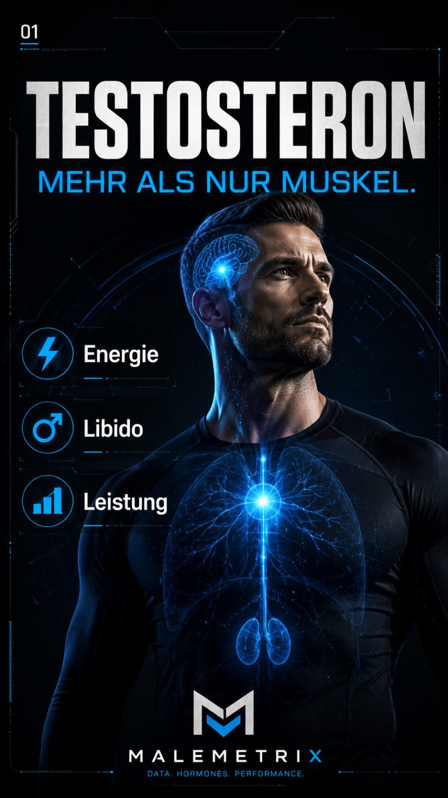
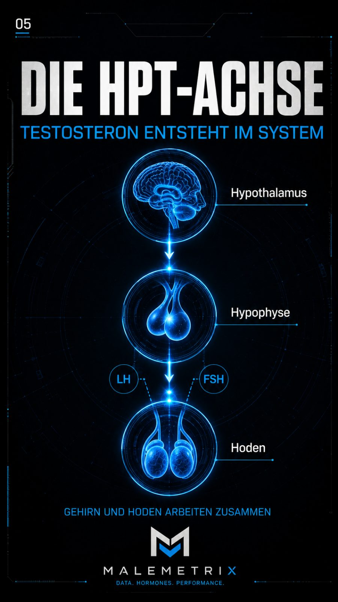
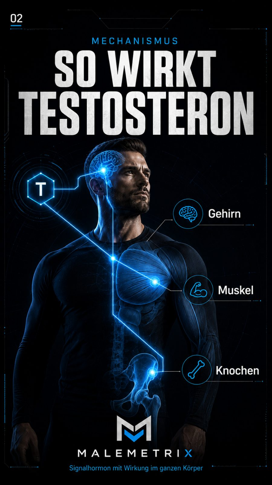
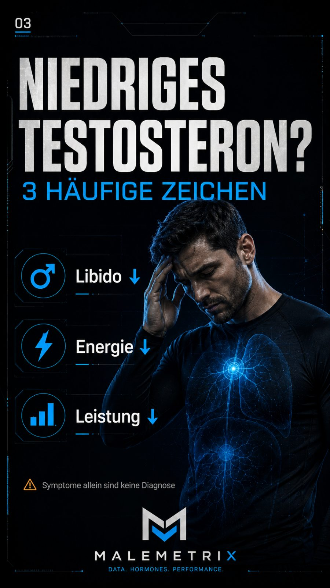
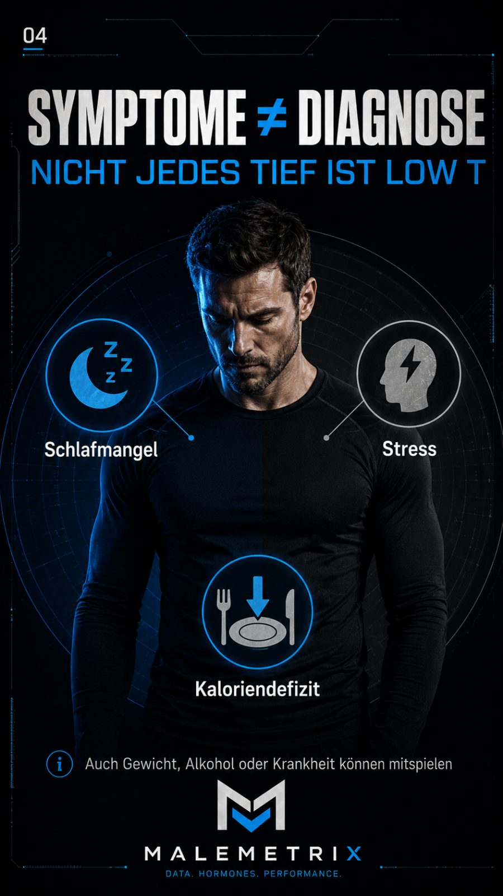

Testosteron verstehen
Der ehrliche Guide für Männer: Was Testosteron wirklich macht, welche Werte zählen, welche natürlichen Hebel funktionieren — und welche Mythen dir nur Geld kosten.
Inhalt
- Worum es geht — und warum T nicht dein erstes Problem ist
- Was Testosteron im Körper macht (die HPG-Achse)
- Warum ein einzelner Laborwert kein Urteil ist
- Schilddrüse zuerst prüfen
- Symptome eines echten Mangels
- Die vier großen Bremsen — mechanistisch
- Schlaf: Testosteron entsteht nachts
- Körperfett & Aromatase: der Östrogen-Umweg
- Krafttraining, Vitamin D & die restlichen Hebel
- Schlafapnoe — das übersehene Screening
- Der „T-Optimierungs"-Hype: was wirkt, was Marketing ist
- TRT — die ärztliche Red Zone
- Die Marker, die du wirklich verfolgst
- Der 12-Wochen-Fahrplan
- Sicherheit & Arzt
1. Worum es geht — und warum T nicht dein erstes Problem ist
Kaum ein Thema ist bei Männern so aufgeladen — und so voller Halbwahrheiten — wie Testosteron. Auf der einen Seite wird es als Schlüssel zu Muskeln, Energie und Männlichkeit verkauft, auf der anderen mit teuren „Test-Boostern" überfrachtet, die nichts bringen. Dazwischen steht ein Mann, der sich müde, antriebslos und unscharf fühlt und daraus schließt: „Mein Testosteron ist im Keller."
Der Kern dieses Ebooks in einem Satz: Dein Testosteron ist nicht dein erstes Problem, wenn Schlaf, Bauchfett und Alkohol außer Kontrolle sind. In den allermeisten Fällen ist ein niedriger T-Wert kein eigenständiges Leiden, sondern ein Symptom — die Anzeigenadel, die auf drei, vier Lebensstil-Baustellen ausschlägt. Wer die Nadel behandelt (Booster, Graumarkt-Hormone), lässt die Baustellen offen. Wer die Baustellen schließt, bewegt die Nadel oft von selbst.
Dieses Ebook ist im Aufbau bewusst mechanismus-first: Erst verstehst du, warum etwas in deinem Körper passiert — welche Drüse welches Signal schickt, warum Bauchfett Hormone umbaut, warum eine kurze Nacht messbar drückt. Dann folgt, was du konkret tust. Diese Reihenfolge ist kein Zufall: Wer den Mechanismus versteht, fällt nicht mehr auf Marketing herein.

2. Was Testosteron im Körper macht (die HPG-Achse)
Testosteron ist das wichtigste männliche Sexualhormon. Es wird zu über 95 % in den Hoden gebildet, gesteuert über einen Regelkreis, der wie ein Thermostat funktioniert — die Hypothalamus-Hypophysen-Gonaden-Achse (kurz HPG-Achse). Diesen Regelkreis zu verstehen erklärt fast alles, was später kommt:
- Der Hypothalamus im Gehirn schüttet pulsartig GnRH aus.
- Das GnRH-Signal weist die Hypophyse an, die Botenhormone LH und FSH ins Blut zu geben.
- LH erreicht die Leydig-Zellen der Hoden und startet dort die Testosteron-Produktion; FSH steuert mit an der Spermienbildung.
- Steigt der Testosteronspiegel, meldet er das per negativer Rückkopplung zurück an Hypothalamus und Hypophyse — die drosseln das Signal. Fällt er, wird nachgeregelt.

Dieser Thermostat erklärt zwei Dinge, die im Buch immer wiederkehren. Erstens: Ein niedriger Wert kann seine Ursache oben im Gehirn haben (Signal fehlt → LH/FSH niedrig, „sekundär") oder unten in den Hoden (Signal kommt an, aber es wird nicht produziert → LH/FSH hoch, „primär"). Deshalb misst der Arzt LH und FSH mit. Zweitens: Führt man Testosteron von außen zu, meldet der Thermostat „genug" und schaltet die Eigenproduktion ab — der Grund, warum TRT die körpereigene Produktion und die Fruchtbarkeit unterdrückt (mehr dazu in Abschnitt 12).
Und Testosteron wirkt auf weit mehr als nur Muskeln:
- Muskel & Kraft: fördert Proteinsynthese, Muskelaufbau und Regeneration.
- Knochen: hält die Knochendichte stabil — ein oft übersehener Langzeit-Effekt.
- Libido & Sexualfunktion: zentraler Treiber des sexuellen Verlangens.
- Energie & Stimmung: beeinflusst Antrieb, Konzentration und Wohlbefinden.
- Körperfett: wirkt mit auf die Fettverteilung — und wird umgekehrt vom Fett beeinflusst (Abschnitt 8).
- Blutbildung: regt die Bildung roter Blutkörperchen an — relevant für die Kontrollen unter TRT.

Wichtig: Testosteron sinkt mit dem Alter langsam und natürlich — grob im einstelligen Prozentbereich pro Jahr ab etwa Mitte 30. Das allein ist keine Krankheit. Erst die Kombination aus niedrigem Wert und passenden Symptomen ist medizinisch relevant. Ein Großteil des vermeintlich „altersbedingten" Abfalls geht auf Begleiter des Alters zurück, die man ändern kann: mehr Körperfett, schlechterer Schlaf, weniger Bewegung, mehr Stress.
3. Warum ein einzelner Laborwert kein Urteil ist
„Mein Testosteron ist niedrig" ist ohne Kontext fast wertlos. Testosteron ist keine feste Zahl, sondern ein bewegliches Signal — und ein einzelner Messpunkt kann massiv in die Irre führen. Vier Gründe:
- Tagesrhythmus: Testosteron folgt einer circadianen Kurve mit dem Höhepunkt am frühen Morgen und einem Tal am Abend. Derselbe Mann kann morgens im Normbereich und nachmittags scheinbar „im Mangel" liegen. Deshalb gilt die Messung morgens (etwa 8–11 Uhr) als Standard.
- Tagesform & Störgrößen: Eine durchzechte Nacht, ein akuter Infekt, harte Diät oder starker Stress können den Wert kurzfristig drücken. Ein einzelner tiefer Wert misst manchmal nur einen schlechten Tag.
- Gesamt vs. frei: Der Standardwert ist das Gesamt-Testosteron. Biologisch aktiv ist aber nur der freie und der locker gebundene Anteil. Das Bindungsprotein SHBG entscheidet über die Aufteilung.
- Labor-Streuung: Referenzbereiche und Messmethoden unterscheiden sich zwischen Laboren. Werte verschiedener Labore sind nicht 1:1 vergleichbar.
Deshalb gehören diese Werte zusammen betrachtet — nicht einzeln:
| Wert | Was er aussagt |
|---|---|
| Gesamt-Testosteron | Der Standard-Screeningwert — die Gesamtmenge im Blut. Morgens messen, bei Auffälligkeit wiederholen. |
| Freies Testosteron | Der biologisch aktive Anteil — oft aussagekräftiger als der Gesamtwert, besonders wenn SHBG aus der Reihe tanzt. |
| SHBG | Bindungsprotein. Hohes SHBG senkt das freie Testosteron trotz „normalem" Gesamtwert; niedriges SHBG (oft bei Übergewicht/Insulinresistenz) täuscht umgekehrt. |
| LH & FSH | Hormone der Hypophyse — trennen ein Problem in den Hoden (LH/FSH hoch) von einem im Gehirn/Signal (LH/FSH niedrig). |
| Östradiol, Prolaktin | Begleithormone. Erhöhtes Prolaktin oder auffälliges Östradiol lenken die weitere Abklärung. |
| TSH (Schilddrüse) | Gehört mit ins erste Panel — siehe Abschnitt 4. Eine Unterfunktion imitiert einen T-Mangel. |
4. Schilddrüse zuerst prüfen
Bevor irgendjemand über „niedriges Testosteron" spricht, gehört ein billiger, oft übersehener Wert ins erste Blutbild: die Schilddrüse (TSH). Der Grund ist simpel und wird ständig übersehen — eine Schilddrüsenunterfunktion erzeugt fast dasselbe Beschwerdebild wie ein T-Mangel: Müdigkeit, Antriebslosigkeit, sinkende Libido, Konzentrationsprobleme, Gewichtszunahme, gedrückte Stimmung.
Mechanistisch hängen beide Systeme zusammen: Die Schilddrüse ist der Grundtakt des Stoffwechsels. Läuft sie zu langsam, drückt das unter anderem über verändertes SHBG und eine gedämpfte HPG-Achse auch die Testosteronwerte — und umgekehrt bessern sich die Beschwerden oft schon, wenn die Schilddrüse korrekt eingestellt ist, ganz ohne dass am Testosteron etwas gemacht wird.
5. Symptome eines echten Mangels
Ein klinisch relevanter Mangel (Hypogonadismus) zeigt sich meist nicht an einer Zahl allein, sondern an einem Muster aus Symptomen — und die aussagekräftigsten sind die sexuellen und energetischen:

- Deutlich nachlassende Libido und Erektionsprobleme (die spezifischsten Zeichen).
- Anhaltende Müdigkeit, Antriebslosigkeit, gedrückte Stimmung.
- Verlust von Muskelmasse und Kraft trotz Training.
- Zunahme von Bauchfett — was den Mangel über die Aromatase weiter verstärkt (Abschnitt 8).
- Konzentrations- und Schlafprobleme, teils Hitzewallungen, verminderter Bartwuchs bei ausgeprägtem Mangel.
Das Tückische: Viele dieser Symptome haben andere, häufigere Ursachen — schlechter Schlaf, chronischer Stress, Übergewicht, zu wenig Bewegung, eine träge Schilddrüse oder Nährstoffmangel. Genau das macht die reine Selbsteinschätzung so unzuverlässig: Das Gefühl „das muss mein Testosteron sein" ist häufig falsch. Die ärztliche Abklärung trennt einen echten Hormonmangel von einem Lebensstil-Problem, das sich oft ohne Medikament beheben lässt.

6. Die vier großen Bremsen — mechanistisch Level 1 · Pflicht
Bevor man über das Steigern redet, lohnt der Blick auf die Bremsen. Vier Faktoren drücken die Werte am zuverlässigsten — und genau hier liegt für die meisten Männer das größte, kostenlose Potenzial. Wichtig ist das Warum, denn erst der Mechanismus macht klar, warum diese Hebel wirken und Pulver nicht:
| Bremse | Mechanismus |
|---|---|
| Schlafmangel | Der Großteil der täglichen Testosteronausschüttung läuft im Schlaf, gekoppelt an die Tiefschlaf- und REM-Phasen. Fehlt Schlaf, fehlt Produktionszeit — messbar schon nach wenigen kurzen Nächten (Details in Abschnitt 7). |
| Viszerales Bauchfett | Fettgewebe enthält das Enzym Aromatase, das Testosteron in Östrogen umwandelt. Mehr Bauchfett = mehr Aromatase = niedrigeres T und höheres Östrogen, was die HPG-Achse zusätzlich drosselt (Abschnitt 8). |
| Chronischer Stress | Dauerhaft erhöhtes Cortisol ist der direkte Gegenspieler von Testosteron: Es wirkt katabol (abbauend), dämpft das GnRH-Signal im Gehirn und verschiebt die Prioritäten des Körpers weg von „Aufbau/Fortpflanzung" hin zu „Alarm". |
| Zu viel Alkohol | Alkohol greift an mehreren Punkten an: Er stört die Leydig-Zellen in den Hoden direkt, belastet die Leber (die Hormone abbaut), verschlechtert den Tiefschlaf und liefert leere Kalorien, die Bauchfett fördern — ein Angriff auf alle anderen drei Bremsen gleichzeitig. |
7. Schlaf: Testosteron entsteht nachts Level 1 · Pflicht
Wenn es einen einzigen unterschätzten Hebel gibt, dann diesen. Ein großer Teil der täglichen Testosteronproduktion ist an den Schlaf gekoppelt — die Werte steigen über die Nacht und erreichen ihren Gipfel rund um das morgendliche Aufwachen. Schlaf ist damit keine Pause, sondern die eigentliche Produktionsschicht. Verkürzt du sie, verkürzt du die Produktion.
Die Studienlage ist hier ungewöhnlich klar: Schon wenige Nächte mit auf etwa fünf Stunden verkürztem Schlaf können den Testosteronspiegel gesunder junger Männer tagsüber deutlich senken — in der Größenordnung, wie sie sonst mehreren Jahren Alterung entspricht. Der Effekt ist also nicht subtil, und er ist reversibel: Er verschwindet mit ausreichend Schlaf wieder.
Warum passiert das? Die tiefen Schlafphasen steuern die pulsartige GnRH-/LH-Ausschüttung. Fragmentierter oder zu kurzer Schlaf zerreißt diese Pulse und hebt gleichzeitig das nächtliche Cortisol — beides drückt die Produktion. Hinzu kommt der circadiane Rahmen: Wer den eigenen Rhythmus stabil hält, unterstützt die morgendliche T-Spitze.
Was den Schlaf mechanistisch verbessert, ohne Pillen:
- Morgenlicht. 10 Minuten Tageslicht in der ersten Stunde nach dem Aufwachen (draußen erreicht dich ein Vielfaches der Lux-Zahl eines Innenraums). Das setzt den circadianen Anker und den erwünschten, gesunden Cortisol-Peak am Morgen — der die Uhr für den abendlichen Melatonin-Anstieg stellt.
- Koffein-Timing. Über den Tag baut sich Adenosin auf und erzeugt Schlafdruck; Koffein blockiert die Adenosin-Rezeptoren nur vorübergehend. Bei einer Halbwertszeit von rund 5–6 Stunden zirkuliert Nachmittagskaffee noch zur Schlafenszeit — ein Cutoff etwa 8–10 Stunden vor dem Bett schützt den Tiefschlaf.
- Abendlicht runter. Helles Licht am Abend verschiebt die innere Uhr nach hinten. Gedimmt und wärmer ab dem späten Abend.
- Kühl, dunkel, ruhig. Eine leicht kühle Schlafumgebung unterstützt das Absinken der Körperkerntemperatur, das den Schlaf einleitet.
- Alkohol als Einschlafhilfe streichen. Er macht müde, zerstört aber genau die Tiefschlaf- und REM-Phasen, in denen die Hormonarbeit passiert.
8. Körperfett & Aromatase: der Östrogen-Umweg Level 1 · Pflicht
Hier lohnt es sich, den Mechanismus wirklich zu verstehen, weil er den Zusammenhang zwischen Bauch und Hormonen erklärt. Fettgewebe ist kein passiver Speicher, sondern ein hormonell aktives Organ. Es enthält das Enzym Aromatase, das einen Teil des Testosterons in Östrogen (Östradiol) umwandelt.
Daraus entsteht ein selbstverstärkender Kreislauf — der Grund, warum Bauchfett so hartnäckig auf die Männergesundheit drückt:
- Mehr (viszerales Bauch-)Fett bedeutet mehr Aromatase-Aktivität.
- Mehr Aromatase wandelt mehr Testosteron in Östrogen um → das Gesamt-T sinkt, das Östradiol steigt.
- Erhöhtes Östradiol verstärkt die negative Rückkopplung auf die HPG-Achse → das Gehirn drosselt LH → die Hoden produzieren noch weniger.
- Niedrigeres Testosteron erschwert Muskelaufbau und Fettabbau → das Fett bleibt oder wächst → noch mehr Aromatase.
Der Kreislauf lässt sich an derselben Stelle durchbrechen, an der er entsteht: durch Reduktion des Körperfetts, besonders des viszeralen Bauchfetts. Weniger Fettmasse heißt weniger Aromatase, heißt weniger Umwandlung, heißt mehr verfügbares Testosteron und weniger Rückkopplungs-Bremse. Genau deshalb ist Abnehmen bei Übergewicht einer der zuverlässigsten „T-Hebel", die es gibt — er ist in Wirklichkeit ein Aromatase-Hebel.
Ein praktischer Marker dafür ist nicht die Waage allein, sondern der Bauchumfang beziehungsweise das Verhältnis von Taille zu Körpergröße (Waist-to-Height-Ratio, grober Zielkorridor unter 0,5). Muskel als „metabolisches Organ" hilft doppelt: Er verbessert die Insulinsensitivität und macht das Halten eines niedrigeren Körperfetts leichter.
9. Krafttraining, Vitamin D & die restlichen Hebel
Schlaf und Körperfett sind die zwei größten Hebel. Diese hier ergänzen sie — jeder mit einem klaren Mechanismus:
- Krafttraining Level 1 · Pflicht Schwere Grundübungen über Wochen progressiv gesteigert sind der stärkste Lebensstil-Reiz für Muskelmasse und Körperkomposition. Der akute T-Anstieg direkt nach dem Training ist kurz und wird überschätzt; der wirkliche Wert liegt im Langzeit-Effekt: mehr Muskel als Glukose-Senke, weniger Fett, bessere Insulinsensitivität, weniger Aromatase. Sinnvoll sind eine Mindest-Dosis (2–4 Einheiten/Woche), Training nah ans Muskelversagen (wenige Wiederholungen in Reserve) und progressive Überlastung. Mehr ist nicht besser: Übertraining ohne Erholung hebt Cortisol und wirkt gegenteilig.
- Vitamin-D-Status Level 2 · sinnvoll Vitamin D wirkt im Körper eher wie ein Hormon, und Rezeptoren dafür sitzen auch im Hodengewebe. Die Datenlage zeigt: Das Auffüllen eines nachgewiesenen Mangels kann sich günstig auf die Werte und das Allgemeinbefinden auswirken — ein bereits normaler Spiegel lässt sich dagegen nicht „nach oben optimieren". Deshalb gilt: nach Blutwert handeln, nicht auf Verdacht. Die konkrete Höhe einer eventuellen Auffüllung entscheidet der Arzt anhand deines Status, nicht ein Ratgeber.
- Stress & Cortisol senken Level 2 · sinnvoll Weil Cortisol der direkte Gegenspieler ist, ist Stressregulation ein echter Hormon-Hebel — nicht Wellness-Beiwerk. Werkzeuge mit physiologischer Wirkung: der physiologische Seufzer (zweimal einatmen, lang ausatmen) senkt akut die Aktivierung; NSDR/Yoga Nidra und Zwerchfellatmung dämpfen die Stressachse; Zone-2-Ausdauer verbessert die Erholungsfähigkeit. Ziel ist nicht „kein Stress", sondern verlässliche Abschalt-Fenster.
- Ernährung mit genug Fett und Protein Level 2 · sinnvoll Testosteron wird aus Cholesterin gebaut; sehr fettarme Ernährung über lange Zeit kann die Werte drücken. Ebenso kontraproduktiv sind aggressive Crash-Diäten mit starkem Kaloriendefizit. Ausreichend Protein (grober Richtwert 1,6–2,2 g/kg, im Defizit eher am oberen Rand) schützt die Muskelmasse beim Abnehmen. Zink und Magnesium spielen als Kofaktoren mit — relevant vor allem bei einem tatsächlichen Mangel, nicht als Dauer-Extradosis.
10. Schlafapnoe — das übersehene Screening
Ein Sonderfall verdient eigene Aufmerksamkeit, weil er beide Enden des Buches verbindet: die obstruktive Schlafapnoe (OSA). Dabei kommt es im Schlaf wiederholt zu Atemaussetzern; der Schlaf wird zerhackt, der Tiefschlaf zerstört, der Sauerstoff fällt ab. Genau dieser fragmentierte Schlaf untergräbt die nächtliche Testosteronproduktion aus Abschnitt 7 — und Schlafapnoe ist zugleich eng mit Übergewicht (Abschnitt 8) verknüpft, sodass sich hier gleich mehrere Bremsen bündeln.
Das Problem: Viele Männer wissen nichts von ihrer Apnoe. Warnzeichen, die ein Gespräch mit dem Arzt rechtfertigen:
- Lautes, unregelmäßiges Schnarchen mit beobachteten Atemaussetzern (oft vom Partner bemerkt).
- Ausgeprägte Tagesmüdigkeit trotz „genug" Stunden im Bett.
- Morgendlicher Kopfschmerz, unerholtes Aufwachen, nächtliches Aufschrecken.
- Übergewicht, dicker Halsumfang, Bluthochdruck.
11. Der „T-Optimierungs"-Hype: was wirkt, was Marketing ist
Rund um Testosteron ist eine ganze Biohacking-Industrie gewachsen, die von Hoffnung lebt, nicht von Daten. Es lohnt, das ehrlich zu sortieren — denn zwischen echten Hebeln und reinem Marketing liegen Welten.
Was tatsächlich wirkt ist unspektakulär und steht in den Abschnitten 6 bis 10: Schlaf, weniger Bauchfett, Krafttraining, weniger Alkohol, Stressregulation, das Auffüllen echter Mängel (Vitamin D, ggf. Zink/Magnesium). Kostet fast nichts, wirkt messbar.
Was Placebo und Marketing ist:
- „Test-Booster" aus dem Regal: Die meisten Tribulus-, Maca-, „Fadogia"- & Co.-Mittel zeigen bei gesunden Männern keine belastbare Wirkung auf das Testosteron. Tribulus ist der Klassiker unter den Enttäuschungen — in kontrollierten Untersuchungen ohne relevanten Effekt auf die Werte.
- Ashwagandha & Rhodiola: ehrlicher eingeordnet — sie können über Stress-/Cortisol-Senkung indirekt beim Schlaf und Wohlbefinden helfen; das ist etwas anderes als ein direkter „T-Boost" und mit Vorsicht sowie zeitlich begrenzt zu betrachten, nicht als Dauerlösung.
- Wundermittel-Versprechen: Kein legales Supplement hebt einen echten Mangel auf — das kann nur eine ärztliche Therapie.
- „Mehr ist mehr": Hohe Dosen einzelner Mikronährstoffe ohne Mangel bringen nichts und können schaden. Das teuerste Supplement ist das, das nichts tut.
Ein einfacher Kompass vor jedem Kauf: Löst dieses Produkt eine der vier Bremsen aus Abschnitt 6? Gibt es einen plausiblen Mechanismus und Daten an gesunden Männern? Fülle ich damit einen gemessenen Mangel? Wenn dreimal nein, sparst du dir das Geld.
12. TRT — die ärztliche Red Zone Level 4 · Red Zone · ärztlich
Eine Testosteronersatztherapie (TRT) ist eine medizinische Behandlung für Männer mit nachgewiesenem, symptomatischem Mangel — keine Lifestyle-Optimierung für gesunde Männer. Dieses Ebook liefert bewusst kein Protokoll, keine Präparate, keine Dosierungen und keine Anleitung. Es liefert nur die nüchterne Einordnung, warum das eine reine Arzt-Angelegenheit ist:
- Sie kommt erst infrage, wenn niedrige Werte und passende Symptome vorliegen, wiederholt bestätigt wurden und andere Ursachen (Schilddrüse, Schlafapnoe, Medikamente, Lebensstil) ausgeschlossen sind.
- Sie ist in der Regel dauerhaft. Von außen zugeführtes Testosteron schaltet über die negative Rückkopplung (Abschnitt 2) die Eigenproduktion ab — steigt man aus, ist die körpereigene Produktion oft für längere Zeit oder dauerhaft gedrosselt.
- Sie kann die Fruchtbarkeit einschränken, weil die Hoden ohne LH-Signal auch die Spermienbildung herunterfahren — ein entscheidender Punkt für Männer mit Kinderwunsch.
- Sie erfordert regelmäßige Kontrollen durch den Arzt, u. a. Hämatokrit/Blutbild (Verdickung des Bluts), PSA und Östradiol.
TRT kann für die richtigen Patienten lebensverändernd sein — und ist für den falschen Anwender riskant. Diese Entscheidung, ihre Indikation, ihre Form und ihre Überwachung trifft ausschließlich ein Arzt gemeinsam mit dir, nie ein Online-Shop und nie ein Ebook.
13. Die Marker, die du wirklich verfolgst
Fortschritt beim Thema Testosteron misst man nicht am gefühlten Tagesform-Schwanken, sondern an einer Handvoll stabiler Marker über die Zeit. Sie zeigen, ob deine Basisarbeit greift — lange bevor ein neuer Laborwert es tut:
| Marker | Warum er zählt / Zielrichtung |
|---|---|
| Bauchumfang / Taille-zu-Größe | Direkter Proxy für viszerales Fett und damit für die Aromatase-Last. Aussagekräftiger als das reine Körpergewicht. Grober Zielkorridor: Taille unter der halben Körpergröße. |
| Schlafdauer & -regelmäßigkeit | Feste Zeiten und ausreichend Stunden sind die Produktionsschicht. Über Wochen tracken, nicht einzelne Nächte bewerten. |
| Kraft-Progression im Training | Steigende Last/Wiederholungen über Wochen zeigen, dass Regeneration, Ernährung und Hormonlage zusammenspielen. |
| Ruhepuls & HRV (Trend) | Als Trend gelesen ein guter Erholungs- und Stressindikator — nicht als Tages-Diktator. Sinkender Ruhepuls / steigende HRV = bessere Erholung. |
| Energie & Libido (Verlauf) | Die subjektiven, aber spezifischen Zeichen — über Wochen notiert ehrlicher als das Gefühl an einem einzelnen Tag. |
| Laborpanel (T gesamt/frei, SHBG, LH/FSH, TSH) | Der harte Check — aber nur morgens, wiederholt und im Kontext. Sinnvoll als Vorher/Nachher nach einem echten Basis-Block, nicht wöchentlich. |
14. Der 12-Wochen-Fahrplan
Bevor du an Hormone denkst, gib deinem Körper zwölf Wochen echte Basis. Der Plan folgt der Wirkstärke: erst Schlaf, dann Bewegung/Körperkomposition, dann Feinschliff und Kontrolle. Er baut aufeinander auf — Erreichtes wird nicht fallengelassen, sondern behalten.
| Zeitraum | Fokus |
|---|---|
| Woche 1–2 | Schlaf zuerst. Feste Bett-/Aufstehzeiten, 10 Min Morgenlicht, Koffein-Cutoff am frühen Nachmittag, Alkohol als Einschlafhilfe streichen, dunkles kühles Zimmer. |
| Woche 3–6 | Krafttraining etablieren. 3× pro Woche Grundübungen, progressiv steigern, nah an die letzten sauberen Wiederholungen. Schlaf-Routine läuft weiter. |
| Woche 7–10 | Körperfett & Ernährung. Leichtes Kaloriendefizit bei Übergewicht, genug Protein, ausreichend gesunde Fette, keine Crash-Diät. Ziel: Bauchumfang bewegt sich. |
| Woche 11–12 | Feinschliff & Check. Stress-Tools fest einbauen (Seufzer/NSDR/Zone 2), Alkohol dauerhaft niedrig, Vitamin-D-Status und (falls Zeichen bestehen) Schilddrüse/Schlafapnoe beim Arzt ansprechen. |
15. Sicherheit & Arzt
Testosteron ist ein wichtiges, aber sensibles Thema. Wenn du den Verdacht auf einen Mangel hast, ist der richtige Weg ein Arztbesuch mit morgendlichem Blutbild — inklusive Schilddrüse, freiem T, SHBG und LH/FSH — nicht der Kauf von Boostern oder Hormonen im Internet. Selbstmedikation mit Hormonen kann ernsthaften, teils irreversiblen Schaden anrichten. Die natürlichen Hebel dieses Buches sind sicher und für praktisch jeden sinnvoll; alles Verschreibungspflichtige bleibt eine ärztliche Angelegenheit.
Nächster Schritt: Finde mit dem kostenlosen MaleMetrix Score heraus, welcher echte Hebel — Schlaf, Training, Körperfett — dich gerade am meisten bremst. Und für die Vorbereitung deines Arztgesprächs hilft dir der Blutwerte-Guide.
Im 1:1-Coaching bekommst du Training, Ernährung, Schlaf und Blutwerte-Struktur persönlich auf dich zugeschnitten — wöchentlich angepasst, mit direktem Draht. Das Erstgespräch ist kostenlos und unverbindlich.
Kostenloses Analysegespräch buchen →© MaleMetrix. Allgemeine Information und Aufklärung, kein Ersatz für ärztliche Beratung und keine Diagnose-, Behandlungs- oder Therapieempfehlung.